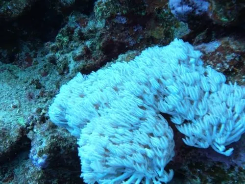

其他无脊椎动物 · 动物界
丁香珊瑚 Xenia umbellata

群体柔软、水螅体有八只羽状触手并不断一张一合的软珊瑚，与虫黄藻共生，常见于热带珊瑚礁浅水。
- 分类
- 门刺胞动物门纲珊瑚虫纲目软珊瑚目科伞软珊瑚科属伞软珊瑚属
- 栖息环境
- 热带珊瑚礁潮间带下区至水深十几米的礁石与礁坡，光照充足处
- 地理分布
- 印度洋至西太平洋热带珊瑚礁，包括中国南海、菲律宾、印度尼西亚和红海
- 保护级别
- 尚无保护级别；水族贸易采集与海水升温影响其种群
物种志
丁香珊瑚的群体柔软肥厚，没有坚硬的骨骼，基部是一层肉质共肉，上面密集地伸出水螅体。每个水螅体有八只羽状触手，触手两侧排满细小的羽枝，整只手像一把张开的羽毛扇。它的颜色多为淡粉、乳白、淡黄或浅褐，水螅体收缩时群体表面呈细密的颗粒状。最特别的是，它的水螅体会以每分钟数十次的节奏一张一合地搏动，像是在水中鼓掌。
它分布于印度洋至西太平洋的热带珊瑚礁海区，包括中国南海、菲律宾、印度尼西亚和红海，栖息在潮间带下区至水深十几米的礁石和礁坡，喜欢光照充足、水流平缓的环境。它体内共生虫黄藻，靠光合作用获得主要养分，同时用触手捕捉浮游生物和溶解有机物。群体靠出芽快速扩展，生长速度在软珊瑚中名列前茅。它没有坚硬的骨骼，容易被螃蟹、海星啃食，也常被海藻覆盖。它尚无保护级别，是水族观赏珊瑚的常见种类，野外采集和水温升高对其有影响。
形态与习性
- 群体柔软肥厚，无硬骨骼，靠共肉相连
- 触手每只水螅体八只羽状触手，两侧有羽枝
- 动作水螅体每分钟数十次一张一合地搏动
- 共生体内共生虫黄藻，靠光合作用供能
- 栖息水层潮间带下区至水深十几米的礁区
- 生长靠出芽快速扩展，生长速度快
趣味知识
- 它的水螅体一直在鼓掌似的一张一合，是软珊瑚里少见的动作。
- 每只触手像一把八股的羽毛扇，边缘排满细小的羽枝。
- 它没有骨头，软得像一团果冻，被螃蟹一夹就缺一块。